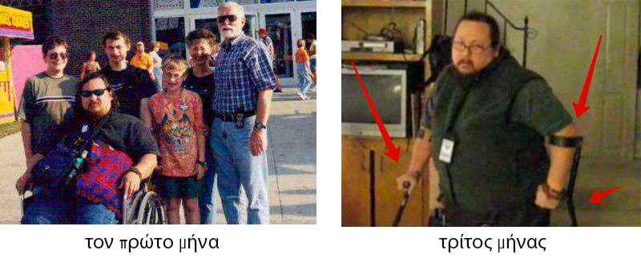
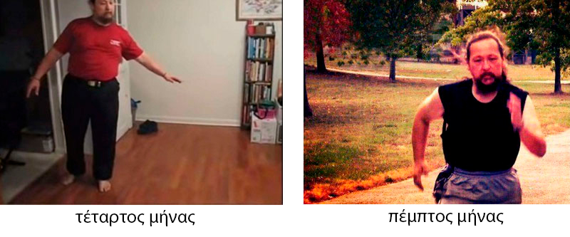

előnyösebb, ha egyszer gyógyítja
meg az ízületeit, mint egész életében szenvedne vele!
az arthropathia több hónapig
fogyatékossághoz vezetett, dede négy növény segítségévelgyorsanhelyre tudtam állítani az
ízületekben lévő porcot.
Szeretném megosztani veletek a történetemet, hogy egészséges ember lévén hogyan kerültem 2
hónap alatt kerekesszékbe, majd hogyan tudtam gyorsan felépülni és talpra állni!

A nevem Karsai
Márk, 46 éves vagyok. Soha életemben nem gondoltam volna, hogy az ízületi betegség egy ilyen súlyos dolog.
én is, mint minden ember, mindig azt gondoltam: Hogy én kerülnék tolószékbe? Nem, velem ez nem történhet
meg... Tehát valószínűleg ezeket a szavakat elolvasva mindenki ezt gondolja, de alábecsültem az általános
ízületi fájdalmakat...
Az egész a
következőképpen kezdődött: egy nagyon átlagos napon, elmentem dolgozni, és éles, kellemetlen szúró fájdalmat
éreztem a térdemben. Eleinte természetesen nem tulajdonítottam ennek nagy jelentőséget, soha nem lehet
tudni, hol nyilallik , semmi baj, majd magától elmúlik, mert minden mindig valahogy magától elmúlik. De
ezúttal nem múlt el, épp ellenkezőleg, pár hónap múlva a térdem normál körülmények között is fájni kezdett,
séta közben is, és minden nap egyre rosszabb lett.
Azt gondoltam,
hogy csak túlterheltem az ízületeimet, az aktív életemből kifolyólag (akkoriban állva dolgoztam,
sportoltam), azt gondoltam, hogy csak pihennem kell, el kell menni nyaralni, és a térdeimet kicsit
pihentetni kell, kentem egy kenőccsel, és azt hittem, majd minden elmúlik. Valószínűleg sok kedves olvasó is
ugyanúgy érvelt magában. De az ilyen gondolatok és kenőcsök miatt nem lett könnyebb a helyzet, a fájdalom
csak fokozódott, és rövid idő alatt elég gyorsan eljutottam arra a pontra, hogy egy hónap múlva már nem
tudtam lábra állni, és kerekesszékre szorultam, hogy mozogni tudjak a lakásban. A napi adag
fájdalomcsillapítóm minimum két tabletta volt..
Egy szóval a
kis gondnak tűnő helyzet magabiztosan és gyorsan szörnyű valósággá vált, soha nem gondoltam volna, hogy
néhány hónap múlva nem tudok majd lábra állni a szörnyű fájdalmak miatt!
Ha megbetegszik az ember,
orvoshoz kell fordulnia, az orvos nagyon sokat tud a betegségekről, és haláláig kezelni is fogja azt,
hiszen ez a munkája

Nem volt más
választásom, orvoshoz kellett mennem, a feleségem ragaszkodott hozzá. A belgyógyász reumatológushoz küldött,
akihez több mint egy hónap alatt sikerült eljutnom, ugyanis nem én voltam az egyetlen, aki ízületi
fájdalmaktól szenvedett, mint kiderült, nagyon sokan vagyunk. Egy nagyon idős orvos, anélkül, hogy bármit
mondott volna, röntgenre meg vér- és vizelet vizsgálatra küldött. A második találkozón, pár perc múlva
diagnosztizált néhányat fajta artrózist, egyes vagy kettes stádium, már nem emlékszem, de nem is igazán
számít.
Nos, a
diagnózis oké, de nem érdekelt, hogy hívják ezt a nyavalyát, mégis hogyan lehet minél hamarabb megszabadulni
ettől a problémától, hogy később ne legyenek visszaesések? És ekkor viszont kellemetlen meglepetések vártak
rám, amiben az idős orvos a koromat hibáztatta, és kijelentett, hogy a probléma az idős korral együtt jár!
Hogy idézzem a szavait: „Ez Önnél időskori.” Mégis miféle időskor?! Csak negyvenhét éves vagyok! A lányom 2
éves, fiatal apa vagyok, és nem egy öreg reumás, azaz artrózisos! De a kezelési ajánlások még jobban
kicsapták a biztosítékot, három is volt belőlük:
Az első az,
hogy iktassak ki minden fizikai megterhelést, ami már egyébként sem volt az életemben, a fájdalom gyorsan
lebeszélt arról, hogy súlyokat emelgessek.
A második
javaslat szerint kennem kellett a térdemet egy olyan melegítő kenőccsel, amelyet reggeltől estig reklámoznak
a tévében. Irigylem, hogy néha az olyan embereket, akiknek azt mondják, hogy kenjék és elmúlik, és azok
kenik és elmúlik. Nekem viszont értenem kell, hogyan képes egy minimális aktivitású kenőcs behatolni a
bőrbe, mindenféle puha és kötőszöveten keresztül, hogyan jut el az ízületig és miképpen javítja azt ott,
amit kell. Mégis ki tudná elmagyarázni ezt nekem, ennek a csodálatos folyamatnak a fizikáját? Na meg már
egyébként is rég kenem, nem egy tubust kivégezte, de mindez haszontalan.
A harmadik
javaslat pedig az volt, hogy szedjek néhány olyan tablettát, amelyek elősegítik a porcszövet
helyreállítását, de figyelmesen olvassuk: ezek nem helyreállítják, hanem csak hozzájárulnak a porcszövet
helyreállításához. És ennyi! Menjenek, tűrjenek, ha lesz pénz, akkor nézzenek be hozzánk...
Mikor
kiléptünk a rendelőből, rájöttünk, hogy bár készek kezelni engem, nagyon szívesen, de meggyógyítani nem
fognak. Ráadásul nekünk még úgy is tűnt, hogy ők maguk sem értik, mi az oka a betegségemnek, és ha az ok
ismeretlen, akkor mégis hogyan lehet megszüntetni a betegséget? Ha a tabletták (amik egyébként nem olcsók)
csak hozzájárulnak, vagyis segítenek, akkor mégis miben? Mivel kellene helyreállítani a szövetemet,
tablettákkal vagy anélkül? És korábban miért volt minden rendben, és most meg semmi sem hat? Állandó
kérdések... Természetesen még mindig megvolt a lehetőség, hogy elmenjek egy fizetős klinikára, de valami azt
súgta, hogy az eredmény ugyanaz lesz, csak drágábban jövök ki. Nos, nem hiszek a fizetős orvostudományban
vagy a fizetett oktatásban. Végül is a probléma nem az orvosban van, ő egy nyugdíjas egy kerületi klinikán
vagy egy fiatalabb hölgy egy divatos orvosi központban, a probléma maga a megközelítés módja. Hogyan lehet
valamit úgy kezelni, hogy meg sem próbálják megérteni a betegség okát? Ez olyan, mintha az ember egy szürke
macskát akarna elfogni egy sötét szobában, lehet, hogy elkapja, de lehet, hogy nem. De nekem mindenem fájt,
szükségem volt egy biztos és százszázalékos gyógyulási módra.
Depressziós
lettem. Pánikoltam, nem tudtam, mit tegyek, kezdtem feladni .. De hála Istennek a feleségem nem adta fel,
amiért most nagyon hálás vagyok neki! Ő volt, aki a következőt mondta: Ha meg akarsz gyógyulni, a kezedbe
kell venni a dolgokat.
Az önkezelés
nem helyes, ahhoz orvos kell, de a gyógyulás csak tőled függ. A feleségem gondolkodni kezdett, és azon törte
a fejét, hogyan lehetne megbirkózni a betegséggel, aztán kigondolt valamit és úgy döntött, hogy kísérletezni
fog rajtam, annak ellenére, hogy felismerte ennek az egésznek az embertelenségét. És az önképzéssel
kezdte.
Az internet
természetesen nagyszerű dolog, nagyon rövid idő alatt megismerkedhet az ember az ókor legendáival, és valós
időben meghallgathatja az óceán túloldaláról bejelentkező professzor előadását. Meg lehet tudni, mit írnak a
ízületekről a kínai sárga császár értekezésében, és mit gondolnak róla a jógások, az Ayurvéda vagy a Vedanta
hívei.
Segítettem a
feleségemnek is információkeresésben, mivel napokig mozdulni sem tudtam az ágyban. Miután 1,5 hónapot
töltöttünk az ízületek kezelésével és helyreállításával kapcsolatos összes rendelkezésre álló információ
tanulmányozásával, összeállítottunk egy listát öt természetes gyémántról, amelyeket különböző időkben
császárok, királyok, főtitkárok, tibeti szerzetesek, óhitűek és még sokan mások használtak.
Az első helyet
aFenyőolajfoglalja el. Kivonata tiszta formában a porcot alkotó molekulák koncentrátuma,
amely elképesztő sebességgel regenerálja a porcszövetet.
Maral agancs
kivonat. Először az Altajon használták. Az agancs sajátossága, hogy egyedülállóan képesek feloldani és
eltávolítani a sólerakódásokat. Azonnal fellazítják az ízületekben lerakódott sót, és 15-19 napos rendszeres
használat után teljesen feloldják az ízületekben és gerincnél lerakódott sókat. Ugye milyen hasznos
tulajdonság.
A Biogén
propolisz a hatását leggyorsabban kifejtő természetes gyulladáscsökkentő gyógyszer. Gyorsan megszünteti a
gyulladásos folyamatokat. Már rendkívül régóta isiász, reuma, polyarthritis, köszvény és visszerek
kezelésére használják.
Mocsaras
sabelnik. Gátolja a fájdalmat, és immunmodulátorként is működik, helyreállítja a test azon autoimmun
folyamatát, amely az ízületi betegségek és a porc romlásának kiindulópontja. Különböző korokban is az
osteochondrosis, az ízületi gyulladás és a reuma kezelésére is alkalmazták. Több királyi patikában is
megtalálható volt.
«Piros
gyökér». Direkt négy gyógyszerösszetevőről írtam, az ötödik a vörös gyökér, nem egészen gyógyítja az
ízületeket, de nem kevésbé fontos összetevő. A vörös gyökér képes fokozni az összetevők hatását. Másrészt
pedig biztosítja a csont- és porcszövetet, Más szavakkal, az első négy növény gyógyítja az ízületeket és a
porcokat, a vörös gyökér pedig évtizedekig képes MEGŐRIZNI az elért eredményt.
A feleségem megtalálta azt, ami
meggyógyít engem!
2 hónapig
különböző termékeket kerestünk, amelyek tartalmazzák ezt az összetételt. Én személyesen teljesen el voltam
keseredve, már kételkedtem, hogy bármi is segíthet nekem, mindenki kételkedett volna a helyemben.
De a feleségem
nem adta fel! Folyamatosan keresgélt, és valahogy véletlenül ráakadt egy állami csatorna orvosának cikkébe,
aki egy olyan szerről beszélt, amely helyreállítja az összes porcot, illetve bármilyen ízületet.
Fellelkesedtünk, megismerkedtünk a termék leírásával, és az összetétele pontosan megegyezett a fenti
listánkkal! Megnéztük, hogy van benne maral agancs, propolisz, fenyőolaj, vörös gyökér, általában az
ízületek legjobb kivonatainak teljes sorát fedeztük fel.
Boldogok
voltunk, hogy megtaláltuk azt, amit kerestünk! De egy újabb baj állta utunkat, kirúgtak a munkahelyemről,
mert, ahogyan ők fogalmaztak, senkinek sem kell egy nyomorék. A pénzünk nagyon kevés volt, mivel a feleségem
fizetése meg kicsi volt. A termék ára állandóan ingadozott, és meglehetősen magas volt, a feleségem 2 héten
át különböző helyekre is elment, keresve ezt a terméket, hátha megjelent valahol megfizethető áron. És egy
nap végre észrevette, hogy az előbb említett orvos weboldalán akciósan meg lehet kapni. Azonnal szólt nekem,
én pedig gyorsan leadtam a megrendelést, mert hát ezt így, gondoltam én, tuti szétszedik, nincs idő
hezitálni! Szó szerint 10 perccel később egy kedves lány felhívott, és egy részletes tájékoztatást adott a
szerről, és a következőket árulta el:
A készítmény szinte azonnal hat, az ízület mozgékonysága már a 2. napon visszatér, és a
fájdalom általában 8-12 óra múlva alábbhagy. De a hosszútávú eredmény eléréséhez szükség van egy 27-35
napos kúrára. Ehhez elég körülbelül 4-5 csomag készítmény, a készítményt eldobható, műanyag géles ampullák
formájában állítják elő.
– Ne sértődjön meg, hölgyem, de én többet tudok erről a szerről, mint amit Ön el tudna
nekem mondani, úgyhogy ne törje magát ennyire. Állítsa ki a megrendelést egyből 10 csomagra.
– Sajnáljuk, de 10 csomagot nem lehet rendelni. A kedvezményes program iránti megnövekedett
igény miatt fejenként maximum 5 csomagot tudunk biztosítunk, ráadásul az esetek 99% -ában 5 csomag
elegendő az ízületek teljes helyreállításához.
– Mégis mi a fene ez! 2 hete várok, azonnal akartam venni már tartalékba is ... De rendben,
akkor legyen 5...
Csak a
biztonság kedvéért akartam 10 darabot rendelni. Mégis csak egy ritka szerről van szó, amelyhez most akciósan
hozzá lehet jutni. Végül is ajándékba is adhatnám valakinek, de a vállalat politikája kegyetlen,
fejenként legfeljebb csak 5 darabot lehet rendelni az adott kedvezménnyel.
De a lényeg,
hogy megengedték, hogy megrendeljek 5 csomagot ebből a szerből, megerősítették a megrendelést, és azt
mondták, hogy várjak, a rendelése postán érkezik majd meg (futárral kicsit később jött volna meg). Azt kell
hogy mondjam, hogy régóta nem kaptam már semmit sem postán, ezért kissé aggódtam. Mégis, ki a fene tudja,
elveszik a levél, és akkor még 2 hónapot várhatok, amíg újra megjelenik a készítmény kedvezményesen.
Szerencsére
minden rendben volt. Meglepően gyorsan, néhány nap alatt már ott volt a postán a megrendelésem. A feleségem
gyorsan átvette a csomagot.
Az eredmények.
Csodálatosak!
Természetesen
tudtam, hogy a kezelés viszonylag gyors lesz, a kúra csak 30-35 napos, de hogy a hatását ilyen gyorsan
megéreztem, az meglepett! (az alábbiakban leírtam, hogy éreztem magam 1 hét, 2 hét után stb.).
Miután
bekentem a térdeimet, lefeküdtem és a szokásos módon a hátamon aludtam, mert máshogy nem tudtam. De már a
JOBB oldalamon ébredtem fel, a fájó ízületeimet az ágynak támasztva, de mégsem volt fájdalmam! Óvatosan
elkezdtem felemelni a lábam, de még mindig fájt! 8 óra alvással ez a készítmény megszüntette a fájdalmat!
Felkeltem, a lábam a földre tettem, és lábra akartam állni, de a fájó térdeim egy kattintással válaszoltak,
és enyhe fájdalmat éreztem. Na jó, hagyjuk még a sétát, végül is csak 8 óra “ telt el, gondoltam
magamban.
Az instrukciók
szerint a fájó ízületekre naponta egyszer kell felvinni. A folyamat felgyorsítása érdekében én kétszer
kentem. Celofánt is alkalmaztam a melegség érdekében.
Gyógyulási naplóm
Fél évet
töltöttem a szer megtalálásával, és további 2 hónapot vártam, amíg elérhetővé vált számomra. De megérte!
Általánosságban elmondhatom, hogy ezek a magamon végzett kísérletek csodálatos eredményeket hoztak, most
megpróbálom napról napra helyreállítani az érzéseimet.
8 órás kezelés: a fájdalom
nyugalomi helyzetben eltűnt. Kisebb fájdalomérzetek maradtak mozgáskor.
1.
nap:a fájdalom teljesen megszűnt. A duzzanat alábbhagyott. Be tudtam hajlítani a térdeimet, de az
ízületeim még mindig kattogtak, fájtak.
7.
napon az ízületek kattogása elmúlt. Könnyen mozogtam, a térdeimet be tudtam hajlítani, könnyen
fel tudtam állni, de még nem kockáztattam meg a járást.
14.
nap: egészségesnek éreztem magam! Körbejártam a lakást, sétáltam az utcán, nem volt semmiféle
kényelmetlenség!
28.
nap: Már remekül éreztem magam, 1 km-t kocogtam, és egyáltalán NEM ÉREZTEM FÁJDALMAT! Úgy éreztem
magam, mintha újjászülettem volna!
35.
nap: átestem a teszteken és a vizsgálatokon, röntgenfelvételeket is készítettek a vállamról és a
könyökömről. Az artrózisnak nyoma sem volt! Az ízületek porcai olyanok voltak, mint egy 30 éves férfié. Az
orvos szerint az előző röntgen biztosan hibás volt, ezért az artrózis diagnózisa tévesnek bizonyult.

Egyszerűbb 1-szer rendbe tenni
az ízületeket, mint állandóan kezelni őket!
Sok pénzt
költöttem különféle készítményekre az ízületek helyreállításához, sokat ott hagytam a rendeléseken, fizettem
a fájdalomcsillapítókat, meg kerekesszéket is vennem kellett. De rájöttem egy dologra: jobb egyszer
meggyógyulni és nagyjából 20 ezret költeni a dologra, és sokkal olcsóbban jön ki az ember, mintha állandóan
kenőcsöket, fájdalomcsillapítókat, tablettákat vásárolna és az orvosok rendeléseire járna, na meg MRI-re és
mindenféle drága vizsgálatra költene. Pláne azzal a tudattal, hogy az ember könnyen fogyatékossá válhat.
Szóval mindenképpen megéri egyszer megvenni egy teljes kúrára elegendő szert és rendesen meggyógyulni,
gondoljátok csak át.... Én is belebotlottam különböző gyógyszerekbe, amelyek csak áltattak és kész átverés
volt. Ne pazaroljátok az időtöket, higgyétek el és tanuljatok az én szomorú tapasztalatomból, a döntés a
tietek. Minden jót mindenkinek!!!
P.S. Kedves olvasó, köszönöm, hogy a cikket végigolvasta, nagyon jól esik. A türelméért
cserébe hálám jeléül az alábbiakban leadhatja a rendelését a készítményre. Most körülbelül havonta egyszer
ingyenesen elérhető, de megéri kivárni, higgye el. Elfelejtettem mondani, hogya
készítmény neve
называется .
Itt a fotója:
Hat hónapba
telt, mire rátaláltunk erre a szerre, de Ön most ezeket az információkat mindössze 5 percnyi olvasásért
kaphatja meg tőlem, hiszen én is ember vagyok, és tudom, hogy sokan segítségre szorulnak, pont mint korábban
én is. Ossza meg sikereit a hozzászólásokban. Ha ismer még hasonló készítményeket, feltétlenül írja meg!
Hálás vagyok a
feleségemnek a gyógyulásomért, köszönöm neki, hogy nem hagyott el, és folyamatosan azon volt, hogy
megtalálja a felépülésem módját. Nagyon szeretem, nagyra becsülöm és tisztelem ezért!
Az akció a következő időpontig érvényes:т
beleértve az utolsó napot is. Minden körben 30 000 darab készítmény kerül felajánlásra akciós
áron. 3-4 hét alatt teljesen elfogy. Mindez úgy, hogy még csak nem is reklámozzák sem a tévében, sem a
rádióban. A készítményről való információ szájhagyomány útján terjed, az emberek barátaiknak és rokonaiknak
is javasolják. Minket is meglepetésként ért, hogy az szóló információk ilyen gyorsan kezdtek
terjedni.
Ezért, ha szerencséje van és még a megadott dátum előtt bukkant rá erre a készítményre, javaslom, hogy a
lehető leghamarabb adja le a megrendelését az . A kedvezményes program ebben az évben már biztosan
nem fog megismétlődni.


Hurrá! Én is a szerencsések közé tartozom, sikerült megrendelnem az készítményt a következő áron: ! Ez hihetetlen!